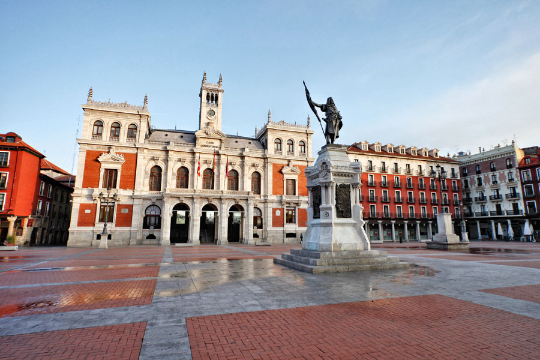
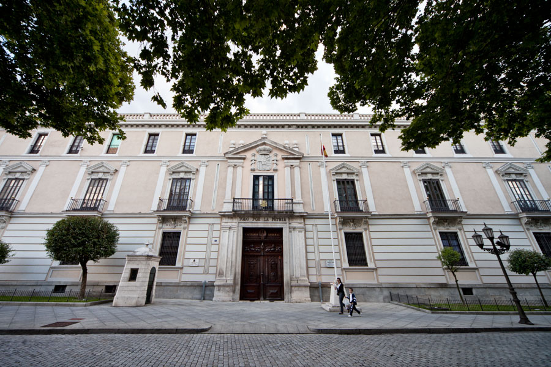

Plaza Mayor
La Plaza Mayor de Valladolid, situada en el corazón de la ciudad española de Valladolid, tiene una rica historia que se remonta al siglo XV. Originalmente, la plaza fue un espacio abierto utilizado como mercado y lugar de celebraciones públicas. Sin embargo, no fue hasta el siglo XVII cuando adquirió su forma actual, gracias a la iniciativa del alcalde Francisco de Cubas, quien propuso la construcción de un edificio con soportales alrededor de la plaza para albergar eventos y actividades comerciales. La construcción de la Plaza Mayor comenzó en 1591 y continuó a lo largo de varios siglos, con diferentes arquitectos y estilos, como el Renacimiento y el Barroco. El edificio principal de la plaza, conocido como la Casa Consistorial o Ayuntamiento, se completó en 1908 y es un magnífico ejemplo de la arquitectura ecléctica de la época. A lo largo de los años, la Plaza Mayor ha sido testigo de numerosos eventos históricos y culturales, desde celebraciones reales hasta protestas políticas. Ha sido un punto de encuentro importante para los habitantes de Valladolid y un símbolo de la vida social y cultural de la ciudad. Hoy en día, la Plaza Mayor sigue siendo el corazón de Valladolid, con sus terrazas, cafeterías, tiendas y edificios históricos que atraen a locales y turistas por igual. Es un lugar vibrante donde se puede disfrutar de la arquitectura impresionante, la gastronomía local y el ambiente animado que caracteriza a esta ciudad castellana.
Campo Grande
El Campo Grande de Valladolid es un emblemático parque público ubicado en el centro de la ciudad. Tiene una historia que se remonta al siglo XVIII, cuando fue concebido como un espacio verde para el disfrute público. Originalmente, el terreno era un jardín botánico propiedad de la familia Fernández de Velasco, pero en 1787 fue adquirido por el Ayuntamiento de Valladolid y se convirtió en un parque público. El diseño del Campo Grande fue influenciado por los jardines paisajistas de la época, con senderos serpenteantes, estanques, puentes y una gran variedad de árboles y plantas. Durante el siglo XIX, el parque fue ampliado y embellecido, convirtiéndose en el principal espacio verde de la ciudad y un lugar muy popular para pasear, relajarse y disfrutar de la naturaleza. A lo largo de los años, el Campo Grande ha sido testigo de numerosos eventos históricos y culturales, así como de cambios en su diseño y uso. En la actualidad, sigue siendo un lugar muy frecuentado por los habitantes de Valladolid y los visitantes, que acuden allí para hacer ejercicio, pasear con la familia, disfrutar de conciertos al aire libre o simplemente desconectar del bullicio de la ciudad. El Campo Grande es un símbolo importante de la vida urbana en Valladolid y un oasis de tranquilidad en medio del ajetreo diario. Su belleza natural y su valor histórico lo convierten en uno de los lugares más queridos y emblemáticos de la ciudad.
Pasaje Gutierrez
El Pasaje Gutiérrez es un destacado espacio comercial y arquitectónico en el centro de Valladolid, España. Se encuentra ubicado entre la calle Santiago y la calle Constitución, cerca de la Plaza Mayor. Su historia se remonta al siglo XIX, cuando fue construido por el arquitecto Jerónimo Ortiz de Urbina entre 1885 y 1889. El Pasaje Gutiérrez es conocido por su elegante diseño arquitectónico, que combina elementos neomudéjares y modernistas. Su estructura incluye una galería comercial cubierta con un techo de cristal y hierro forjado, que le confiere un aire de distinción y belleza. En su interior alberga una variedad de tiendas, boutiques y establecimientos gastronómicos, convirtiéndolo en un destino popular para ir de compras y disfrutar de la gastronomía local. A lo largo de los años, el Pasaje Gutiérrez ha sido objeto de restauraciones y renovaciones para preservar su esplendor original y adaptarse a las necesidades modernas. Hoy en día, sigue siendo un lugar emblemático en Valladolid, tanto por su valor histórico y arquitectónico como por su actividad comercial y cultural. El Pasaje Gutiérrez es un símbolo del patrimonio urbano de Valladolid y un lugar de encuentro y disfrute para residentes y visitantes por igual. Su belleza arquitectónica y su ambiente animado lo convierten en una parada imprescindible para aquellos que desean explorar la riqueza cultural y comercial de la ciudad.
Museo Casa Cervantes

El Museo Casa de Cervantes, ubicado en la ciudad de Valladolid, es una institución cultural dedicada a la vida y obra de Miguel de Cervantes Saavedra, uno de los escritores más importantes de la literatura española y mundial, conocido principalmente por su obra maestra "Don Quijote de la Mancha". La Casa de Cervantes, donde se encuentra el museo, es un edificio del siglo XVI que se cree que pudo haber sido la residencia de la familia Cervantes durante su estancia en Valladolid entre 1604 y 1606. El museo fue inaugurado en 1956 y desde entonces ha sido un lugar de referencia para el estudio y difusión de la vida y obra del ilustre escritor. El museo cuenta con una colección permanente que incluye objetos relacionados con la vida cotidiana en la época de Cervantes, así como documentos, libros antiguos, ediciones de "Don Quijote" y otros trabajos del autor, retratos y obras de arte que ayudan a contextualizar su legado. Además, el museo organiza exposiciones temporales, actividades educativas y eventos culturales relacionados con la figura de Cervantes y su obra. La Casa de Cervantes es un lugar de visita obligada para los amantes de la literatura y la historia, así como para aquellos interesados en conocer más sobre la vida y la época del autor de "Don Quijote". Su ubicación en Valladolid, ciudad vinculada a la biografía de Cervantes, y su rica colección hacen de este museo un importante centro de referencia para el estudio del Siglo de Oro español y la literatura universal.
Palacio Real
El Palacio Real de Valladolid, también conocido como Palacio de los Vivero o Palacio de los Pimentel, es un destacado edificio histórico ubicado en la ciudad de Valladolid, en España. Su construcción se remonta al siglo XV, aunque ha experimentado diversas modificaciones a lo largo de los años. Originalmente, el palacio fue residencia de la familia Vivero, pero en el siglo XVI pasó a manos de los Pimentel, una familia noble muy influyente en la historia de Valladolid y de España. Durante el siglo XVI, el palacio fue testigo de importantes eventos históricos, incluyendo la muerte de la Reina Isabel la Católica en 1504. El Palacio Real de Valladolid presenta una arquitectura característica del Renacimiento español, con detalles ornamentales que reflejan el esplendor de la época. Destacan sus patios interiores, galerías y la torre del homenaje, que se alza imponente sobre el conjunto. En la actualidad, el palacio alberga la sede de la Audiencia Provincial de Valladolid y otras dependencias judiciales, por lo que no está abierto al público en general. Sin embargo, su presencia imponente y su importancia histórica lo convierten en un punto de referencia en el centro de la ciudad, recordando el papel relevante que Valladolid ha desempeñado a lo largo de la historia de España.
Palacio Santa Cruz
El Palacio de Santa Cruz, también conocido como Palacio de Santa Cruz la Real, es un imponente edificio renacentista ubicado en la ciudad de Valladolid, España. Fue construido entre los siglos XV y XVI, durante el reinado de los Reyes Católicos, y es considerado uno de los ejemplos más destacados de la arquitectura civil del Renacimiento en España. El palacio fue mandado construir por el cardenal don Juan Rodríguez de Fonseca, quien fue un importante prelado y político en la corte de los Reyes Católicos. Su diseño se atribuye a los arquitectos Juan y Rodrigo Gil de Hontañón, destacados maestros de la arquitectura renacentista española. El Palacio de Santa Cruz presenta una fachada principal sobria pero elegante, con influencias platerescas y detalles ornamentales que denotan la importancia de su propietario. Destaca su patio interior, de estilo renacentista, con una esbelta escalera de caracol que comunica las diferentes plantas del edificio. A lo largo de los siglos, el palacio ha tenido diferentes usos y propietarios, pasando por manos de la Universidad de Valladolid y, más recientemente, siendo sede de la Diputación de Valladolid. En la actualidad, alberga la Biblioteca Pública de Valladolid y la sede del Instituto de la Lengua de Castilla y León. El Palacio de Santa Cruz es uno de los monumentos más emblemáticos de Valladolid y un importante testimonio del esplendor renacentista en España. Su valor arquitectónico e histórico lo convierten en un lugar de visita obligada para los amantes del arte y la historia que visitan la ciudad.
Plaza del Milenio
La Plaza del Milenio es un espacio urbano emblemático situado en Valladolid, España, diseñado para conmemorar el cambio de milenio en el año 2000. Se encuentra en la orilla del río Pisuerga, cerca del Puente Mayor y del centro histórico de la ciudad. Inaugurada en el año 2002, la Plaza del Milenio es conocida por su diseño moderno y vanguardista, que incluye elementos arquitectónicos y artísticos de gran relevancia. Uno de sus puntos más destacados es el Monumento al Milenio, una estructura de acero de más de 30 metros de altura diseñada por el arquitecto Antonio Fernández Alba y el escultor Eduardo Chillida. Este monumento representa la unión entre el cielo y la tierra, con una gran espiral que simboliza el paso del tiempo y el inicio de un nuevo milenio. La plaza también cuenta con amplias zonas peatonales, áreas verdes, fuentes y espacios para la realización de eventos culturales y actividades al aire libre. Además, ofrece unas vistas panorámicas impresionantes del río Pisuerga y del skyline de la ciudad. La Plaza del Milenio se ha convertido en un importante punto de encuentro y recreo para los habitantes de Valladolid y un lugar de interés turístico para los visitantes. Su diseño innovador y su simbolismo la convierten en un lugar único que refleja la modernidad y la proyección hacia el futuro de la ciudad.
Mercado del Val
El Mercado del Val es un mercado municipal emblemático situado en el corazón de la ciudad de Valladolid, España. Fue inaugurado en 1882 y se encuentra ubicado en un edificio de estilo neomudéjar diseñado por el arquitecto municipal Jerónimo Ortiz de Urbina. El Mercado del Val es conocido por su arquitectura característica y su amplia oferta de productos frescos, que incluyen frutas, verduras, carnes, pescados, quesos y otros alimentos. Además de los puestos de productos alimenticios, el mercado también alberga establecimientos de restauración y comercios especializados en gastronomía local. A lo largo de los años, el Mercado del Val ha sido un lugar importante de encuentro y abastecimiento para los habitantes de Valladolid, así como un punto de interés para los visitantes que desean conocer la oferta gastronómica de la ciudad. Además de su función comercial, el mercado también acoge eventos culturales y actividades relacionadas con la gastronomía y la promoción de productos locales. El Mercado del Val es un lugar emblemático de Valladolid que refleja la tradición y la vitalidad de la vida urbana en la ciudad. Su ambiente animado, su oferta variada y su arquitectura histórica lo convierten en un lugar de visita obligada para aquellos que desean explorar la riqueza gastronómica y cultural de la región.